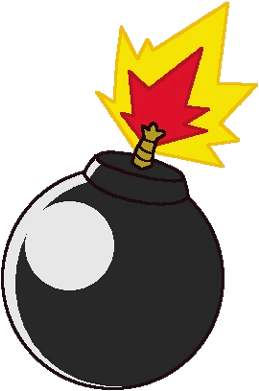

About Super Bomberman 4
Super Bomberman 4 is a multiplayer action-party video game, developed by Produce and published by Hudson Soft for the Super Famicom, released on April 26, 1996, in Japan.
Part of the Bomberman franchise, it is the fourth installment of the Super Bomberman series.
The story begins at an unknown time after Super Bomberman 3. Bagular's brain escaped the explosion of his flying saucer and has summoned the Four Bomber Kings and Great Bomber to get revenge on White and Black Bomber. The two, along with other fellow Bombermen, are sent hurtling back in time to fight through different eras and ultimately stop Bagular.
Turn your friends into ashes with this game!
Old-school bombing fun
- The game is very simple, you lay bombs and try to kill the enemies.
- The graphics are very good and use the best of the SNES.
- You might not want to play again story mode, but you always can play battle mode!